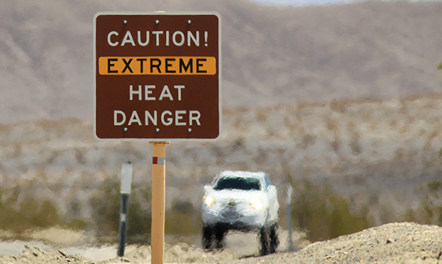
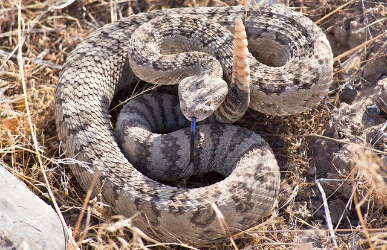
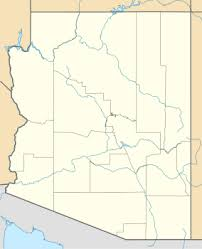

Safety Tips
  Arizona is infamous for it's intense heat- especially in the summer, because of this hiking becomes all the more dangerous. Hydration during this kind of heat is critical to survival. The amount of water that a hike requires varies from hike to hike depending on intensity, length and the fitness level of the participant; however, a good rule of Thumb is to carry amount two liters of water at the minimum. If one is hiking in the intense summer months (June-August), it is recommended to bring an additional liter or even just a couple extra water bottles. A surprisingly good tip is to bring chapstick on the trail. When one is trying to conserve water, chapstick can provide a great sense of relief without drinking too much water.
It is popular to take furry friends along on cool hiking adventures however it can be dangerous for them to spend excessive time outdoors in higher temperatures, so make sure you understand your pet's abilities and pay attention to their behavior. Pets heat up and cool off differently than humans, so don't base their health level on how you're feeling. Your own animals are not the only creature you need to keep and eye on in the desert-scape, filled with rattlesnakes, scorpions, and venomous lizards the desert is not always kind to visitors. Make sure to keep your pets on a leash if only to protect them from investigating wildlife that would rather be left alone. If you see (or hear) a rattlesnake make sure to keep your distance.
Planning is an essential part to any journey. A few critical parts of a safe adventure is studying up on your route. Sites like AllTrails.com or HikeArizona.com provide platforms for other people to share their experience on the trails. Visiting these sites provides a great opportunity to learn about the trail and learn from the experiences of other hikers. Knowing where your going and knowing what to expect is a must for any adventure. Knowing the length and intensity of the hike you are planning on is important for both food and water preparation. A common motto is prepare for the worst but expect the best. Depending on the location of your hike, make sure you keep an eye on the weather and keep in mind how it will affect the trail.